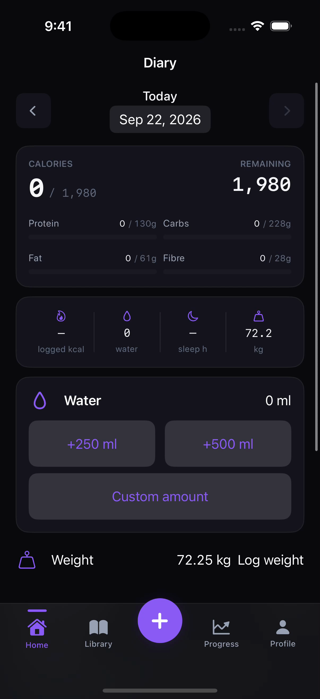
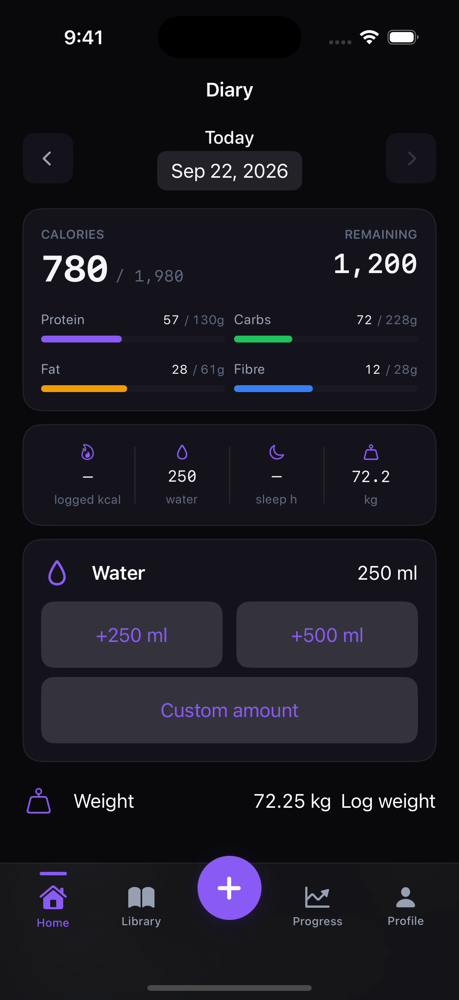

A little less effort. A little more clarity.
01 / Choose
Your recent foods, ready when you are.
02 / Adjust
Set the amount. The numbers follow.
03 / Save
Nutrition, movement, sleep, and progress.

